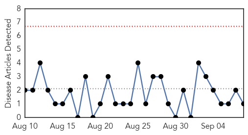
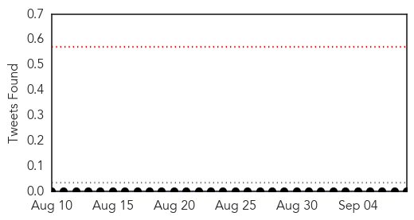
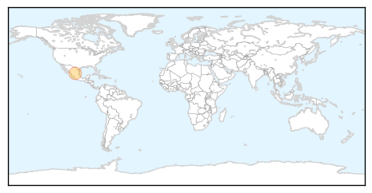
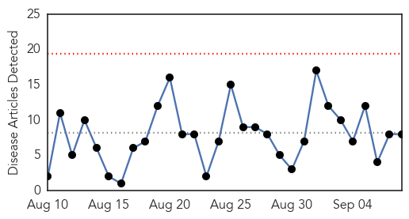
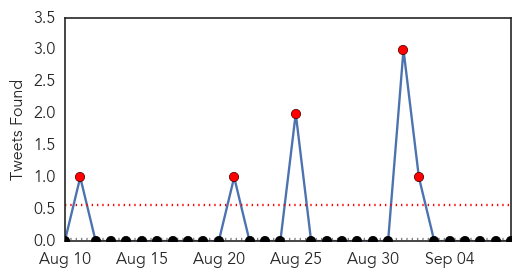
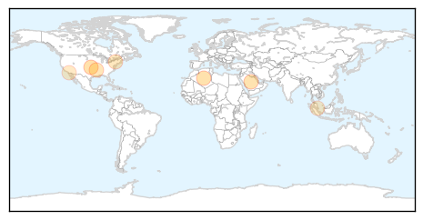
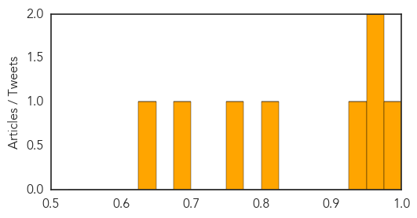

Pertussis
30-Day Web Trend
0 alerts, 0 warnings

30-Day Twitter Trend
0 alerts, 0 warnings

Article Locations
Article Confidences

Top Articles:
Top Tweets:
-
No tweets found for Sep 08, 2015
Influenza
30-Day Web Trend
0 alerts, 0 warnings

30-Day Twitter Trend
5 alerts, 0 warnings

Article Locations
Article Confidences
Top Articles:
- 0.980
- Officials Emphasize Flu Vaccine For Children, Health Care Workers « CBS Seattle
- 0.973
- Doctors Advise Residents to Get Flu Vaccines before the Flu Season Begins
- 0.967
- Study shows Israeli elderberry extract effective against avian flu
- 0.930
- Qatar- SCH advises vaccination
- 0.814
- Genetically modified chickens could beat bird flu
- 0.751
- September 7, 2015 Archives
- 0.676
- Vampire bats and sand flies inspire a career in public health after two decades of military service
- 0.645
- Contagious viral disease leads to suspension of imported horses from Malaysia to Singapore, Singapore News & Top Stories
Top Tweets:
-
No tweets found for Sep 08, 2015